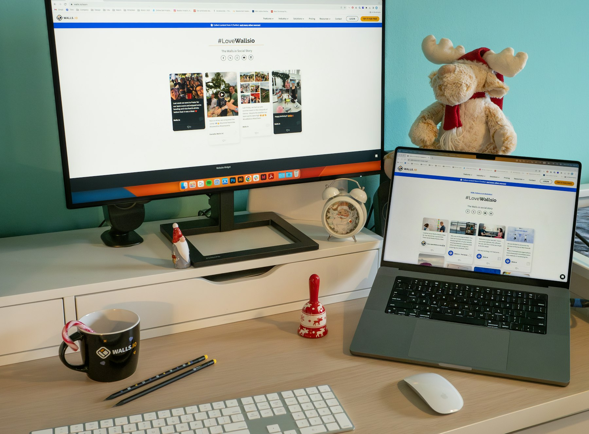

TL;DR
Engineers can tap into their existing skills for lucrative side hustles. Product development and online courses are effective options. Budget 5-10 hours weekly for these efforts, and avoid common pricing and planning mistakes.
Side Hustles for Engineers: Practical Options Await

Engineers often overlook profitable side hustles right under their noses, relying on generic advice that doesn't fit their unique skill sets.
If you're an engineer wondering how to boost your income, you can tap into your existing knowledge and experiences. For instance, freelance engineering work, selling designs on platforms like Etsy, or offering specialized consulting can be lucrative.
Why Engineers Often Miss Out on Lucrative Side Hustles
### Why Engineers Often Miss Out on Lucrative Side Hustles
Many engineers hesitate to pursue side hustles due to misconceptions such as needing a completely new skill set or extensive startup capital.
This reluctance often stems from a fear of the unknown, leading many talented professionals to remain in traditional roles that may not fully leverage their capabilities.
In reality, platforms like Upwork and Freelancer are goldmines specifically tailored for those with an engineering background. For instance, a mechanical engineer could offer freelance consulting services on product design, charging between $50 to $150 per hour depending on experience and expertise.
Alternatively, a software engineer might find success in coding gigs, which could pay anywhere from $30 to $200 per hour for projects involving app development or software maintenance.
Moreover, tutoring can yield substantial income for engineers, especially in STEM subjects. Online tutoring platforms allow you to charge $20 to $100 per hour based on your specialization.
A seasoned electrical engineer could tutor students in circuits and electronics, making $200 per week and requiring only a few hours of commitment.
Consider the case of Sarah, a civil engineer who initially viewed side hustles as a distraction from her full-time job. After some research, she discovered that she could freelance on residential design projects, charging $75 an hour.
She took on just one project a month, earning an additional $3,000 annually without compromising her day job.
Turning Engineering Skills into Profit: Actionable Ideas
### Turning Engineering Skills into Profit: Actionable Ideas
So, what are the practical side hustle ideas for engineers? Start by identifying your unique skill set and exploring how you can effectively monetize it.
For instance, if you have strong expertise in software development, you might consider offering freelance coding services on platforms like Upwork or Freelancer.
Depending on your experience, you could charge between $50 to $150 per hour. If you dedicate 5-10 hours a week, you could be looking at an extra $1,000 to $2,000 monthly.
Another lucrative avenue is product development. Imagine you design a prototype for a new gadget or tool; platforms like Kickstarter or Indiegogo can help you crowdfund your idea.
For example, if you create a unique home automation product, you might aim to raise $10,000 in your first campaign, which could be achievable with a compelling prototype and marketing strategy.
Additionally, creating online courses is a great way to leverage your knowledge. Platforms such as Udemy or Teachable allow you to create courses on specific engineering topics, from CAD design to programming languages.
After investing 20-30 hours to develop a 5-module course, you can price it at $100. If you attract just 50 students in the first month, that’s a cool $5,000 in passive income.
As a case in point, consider Jane, a civil engineer who specializes in sustainable materials. She started the side hustle of consulting for eco-friendly construction projects while working full-time.
Dedicating 8 hours a week to this endeavor, she began at a rate of $100 per hour and managed to secure one project per month. Initially, she faced challenges balancing her job and the side hustle, but her efforts paid off when she earned an additional $2,400 over six months—far exceeding her expectations.
Real Example: Launching an Online Course in 30 Days
Imagine you decide to create an online course on a specific engineering skill. Here's a 30-day timeline to illustrate how to bring this idea to life: 1. Week 1: Identify your niche and conduct market research. Ask potential learners what they want. 2. Week 2: Outline your course content and collect materials, aiming for 5-6 modules. 3. Week 3: Start recording videos and creating supporting materials like quizzes. Set a daily goal of at least one module completed. 4. Week 4: Launch your course on platforms like Udemy or Skillshare and market it through social media.
Common Pitfalls: Mistakes Engineers Make in Side Hustles
### Common Pitfalls: Mistakes Engineers Make in Side Hustles
Many engineers jump into side hustles without adequate planning, which often leads to common mistakes that can hinder their success. One significant pitfall is undervaluing their time.
For example, if you decide to charge $25/hour for your skills but find yourself spending 15 hours on a project that pays only $200, you’re effectively earning $13.33/hour.
This not only devalues your expertise but also makes it challenging to sustain your side hustle financially.
Another frequent mistake is poor time management. Enthusiasm can often cloud judgment, leading engineers to underestimate how much time they can realistically commit.
Imagine an engineer with a full-time job who commits to a side project requiring 20 hours a week. If their main job already demands 45 hours, they might find themselves overwhelmed, leading to burnout and a drop in performance at both jobs.
Additionally, neglecting market research can result in pursuing the wrong types of projects. For instance, an engineer with software skills might assume that app development is a lucrative avenue.
However, after a month of effort, they discover that the app market is saturated, and potential clients are focused on cheaper, template-based solutions, leaving them frustrated and underpaid.
Consider the case of Sarah, a mechanical engineer who decided to start freelancing CAD design work. She initially charged a flat fee of $300 for what she thought would be a straightforward job.
However, she didn’t account for the 20 hours of revisions needed to meet the client's standards. By the time she completed the project, she realized she had earned less than $15/hour.
Steps to Scale Your Side Hustle Income
After establishing a side hustle, think about scaling. Once you've identified viable projects, focus on these next steps: 1. Expand Your Client Base: Use social media and networking to reach potential clients. 2. Automate Repetitive Tasks: Systems like Zapier can help automate parts of your workflow, allowing you to focus on higher-value tasks. 3. Diversify Your Income Streams: If tutoring brings in $50 a week, consider adding freelancing or an online course that could yield $200+ monthly.
FAQ
What skills can I leverage as an engineer for a side hustle?
You can leverage technical skills like coding, product design, or consulting expertise in various engineering disciplines such as mechanical or civil.
How much time should I allocate weekly to my side hustle?
It's beneficial to set aside 5-10 hours weekly to effectively manage and grow your side hustle.
What common mistakes should I avoid?
Avoid undervaluing your time, neglecting market research, and failing to manage your workload effectively.
This article has been thoroughly reviewed for practical usefulness and updates when new information becomes available.
Next step
Use the article as a decision point, not just reading material. Your next system matters more than more browsing.
Search more articles
Find related tools, workflows, and guides.
Photo credits
- Photo 1: Walls.io via Unsplash
- Photo 2: Sheraz Abdul Ghafoor via Unsplash
- Photo 3: Bruno BD via Unsplash
- Photo 4: Vitaly Gariev via Unsplash
- Photo 5: Vitaly Gariev via Unsplash